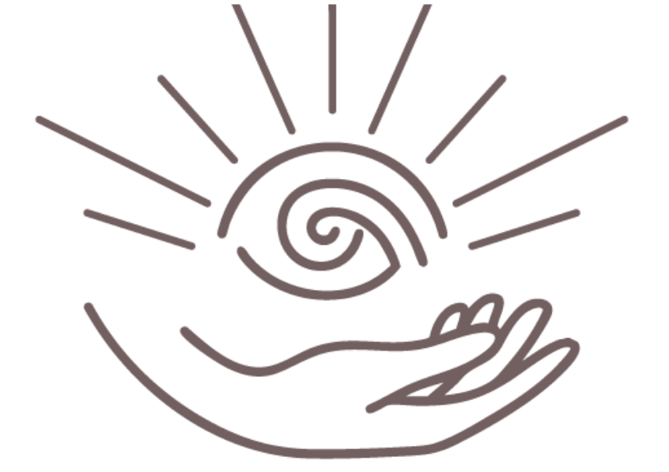
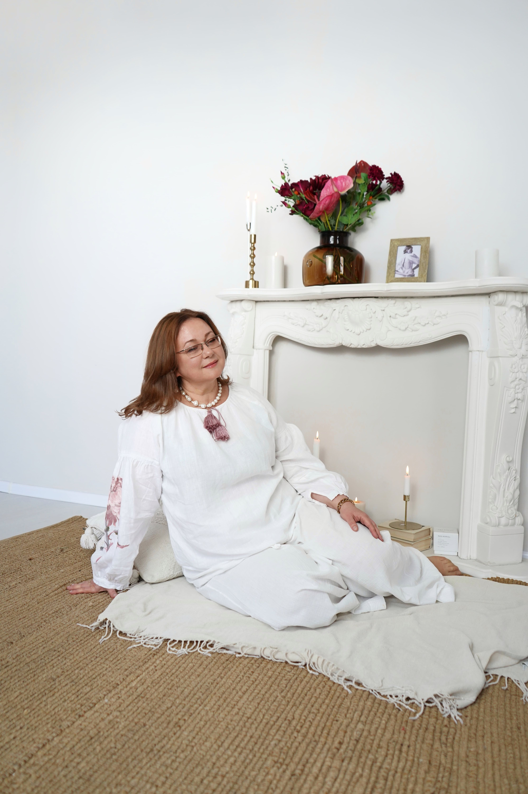
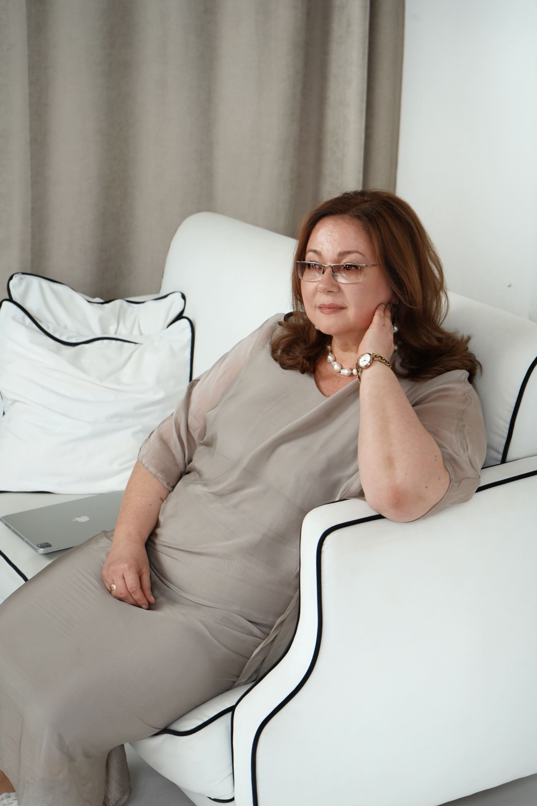
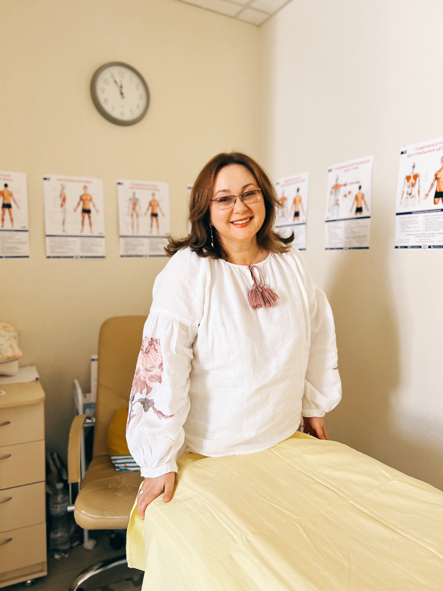
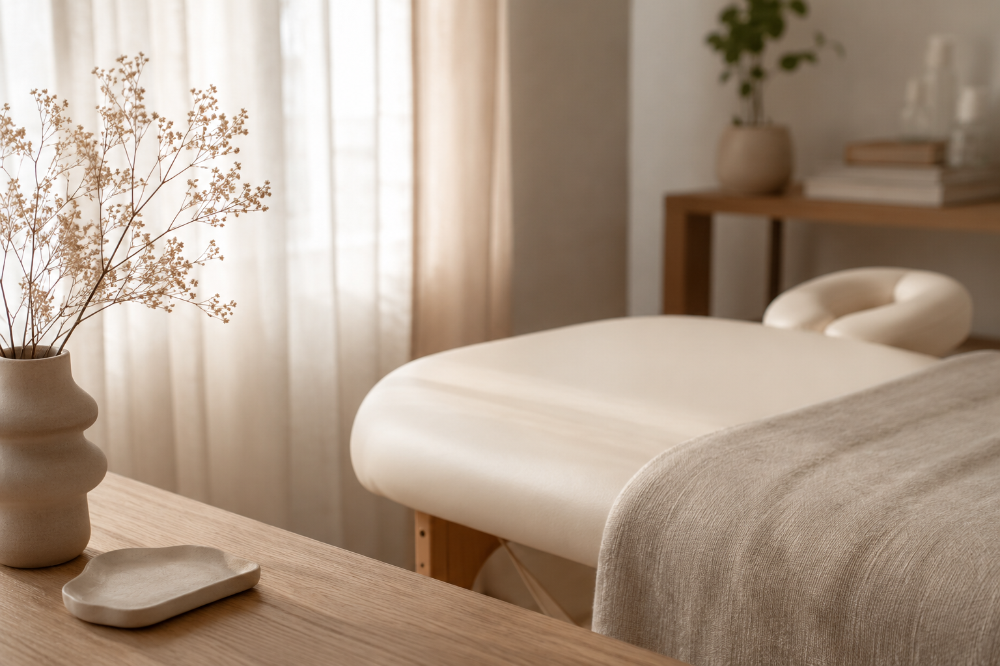

Остеопатія та психосоматика
Робота з тілом, психосоматичними проявами та відновленням природного балансу організму.

Оксана Гордієнко Цілісний підхід до здоров'яОксана Гордієнко - остеопат і клінічний психолог. Допомагаю знайти першопричину болю, психосоматичних проявів та відновити природний баланс організму.

Я остеопат, психолог, і мені близький цілісний підхід до здоров'я. У своїй роботі я об'єдную на благо пацієнта методи остеопатичної медицини, кінезіології, традиційної китайської медицини, психології, психосоматики та нейропсихології. Разом з пацієнтом ми досліджуємо проблему з різних сторін, щоб знайти першопричину хвороби.
Кожна людина унікальна, тому я не працюю за шаблоном. Ми йдемо туди, де живе ваш запит — в тілі, в психіці, у відносинах або у вашому досвіді. Без насильства над собою, в комфортному для вас темпі.
Я мама двох доньок. 25 років у щасливому шлюбі.
Поєдную тілесні, психологічні та нейропсихологічні методи, щоб знайти першопричину й підібрати мʼякий шлях відновлення.
Робота з тілом, психосоматичними проявами та відновленням природного балансу організму.
Мʼяке відновлення балансу, ресурсності та природних процесів організму.
Підтримка нервової системи після стресу, травматичного досвіду й виснаження.
Якщо якийсь із пунктів відгукується — ви вже на етапі визнання проблеми, а значить, на шляху до її вирішення.

На офлайн сеанс в Дніпрі до мене можна звернутися з такими запитами:
Залишаєте заявку, я зв'язуюся протягом доби.
Оплата після узгодження дати.
Перше знайомство та план роботи.
Рухаємося до результату.

Кожна історія унікальна. Але ось те загальне, що відзначають мої пацієнти в процесі нашої роботи:
«Після перших сесій я відчула, що знову керую своїм життям»
Почуття підтримки, спокою та контакту з собою — те, до чого ми поступово приходимо в роботі
ПОЧАТИ РОБОТУЗникає відчуття, що ви «вичавлені». З'являється інтерес до життя, бажання ставити цілі та досягати їх
Здатність зберігати стійкість, навіть коли навколо все змінюється. Ясність і довіра до себе
З'являється більше спокою, а тривожні стани вже не захоплюють повністю
Менше напруги, більше щирості та задоволення — і з партнером, і з собою
